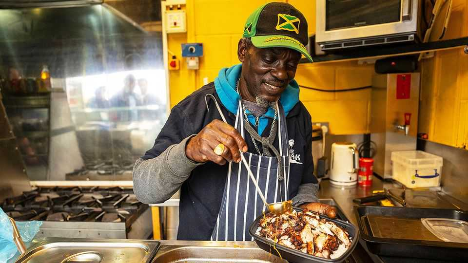

Rubbish football, fun food: a lower-league recipe for success
British clubs are drawing fans with gourmet offerings

Aug 27th 2026
The bar of the Tooting & Mitcham United football club looks like a relic from the 1930s. Black-and-white photographs of past players line the walls as fans queue to buy £5 ($6.80) pre-match pints—a bargain by south London’s standards. But instead of accompanying their beers with pies like fans of yore, today’s supporters are tucking into perfectly seasoned jerk chicken and plantains served on rice. “The food is what gets me here,” says Terry, a Chelsea supporter turned season-ticket holder at semi-professional Tooting.
Lower-tier football clubs are having a culinary moment. Footy Scran, an Instagram account documenting football-stadium food around the world, has singled out several clubs outside the Premier League for praise. Supporters of Whitehawk, a non-league club in Brighton, can tackle a gravity-defying burger combining chicken, beef and hash browns, topped with onion fries. Forest Green Rovers, in the Cotswolds, another non-league club, has decided to make environmentalism part of its identity by becoming the world’s first vegan football club. Its match-day menu might include a plant-based meat burrito with stir-fried peppers or a cauliflower, chickpea and onion bhaji pasty.
Improving match-day food is about more than catering to varied tastes. Dean Stones, the general manager of DN4 Events, which caters for Doncaster Rovers in League One, says there is a strong business case for serving food that is better than the traditional pie and Bovril. After the club’s “Chippy Tea Butty”—a fishcake patty on a bed of chips, topped with tartar sauce and mushy peas—went viral on social media, more away supporters began making the journey. Mr Stones says the appeal for such fans is that the club offers food that is specific to Yorkshire.
The beer can be another perk at lower-league games. Dulwich Hamlet in south London sells craft beer brewed for the club in nearby Peckham for £6.50 a pint. Tilbury in Essex charges a mere £4.50, and fans can sip from the stands. That is a contrast with the Premier League. At Arsenal’s Emirates Stadium, for example, a pint of Guinness or Asahi costs £7.50 and has to be gulped in 15 minutes at half-time.
Lee Upton, Tilbury’s club secretary, estimates that a family of four could attend a game at his club’s Essex stadium for less than £100, including tickets, food, and two rounds of beer for mum and dad. A similar outing at a top Premier League club could cost two or three times as much. The football may not be quite the same standard, but a trip to the lower leagues can still compete through a sense of community, cheap(ish) drinks and—increasingly—the fun food. ■